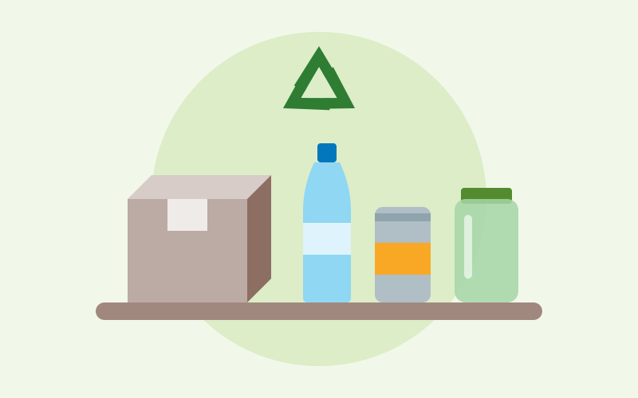
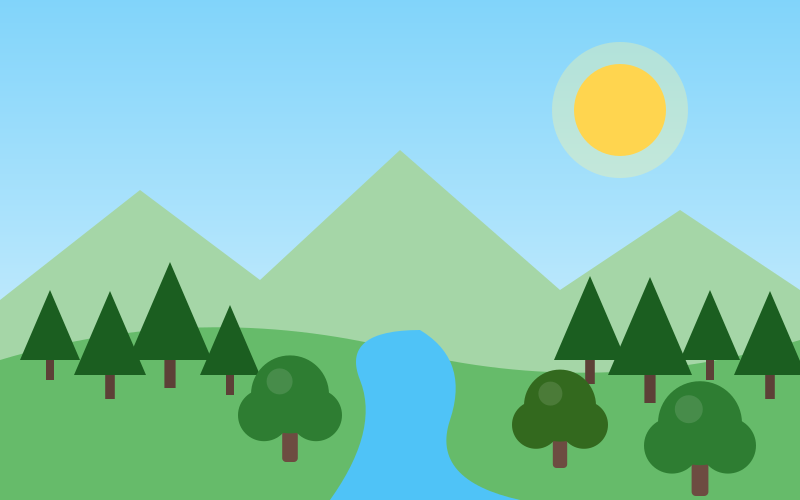
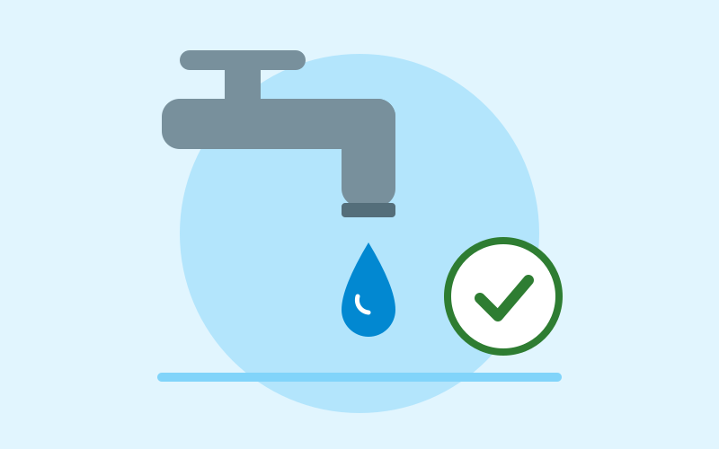
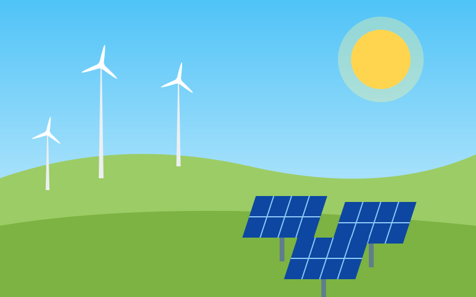
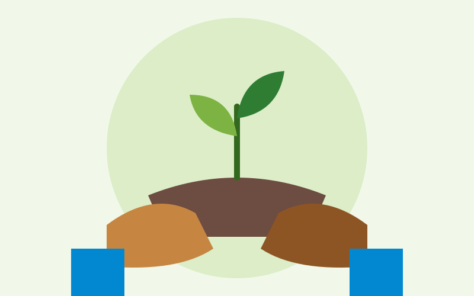
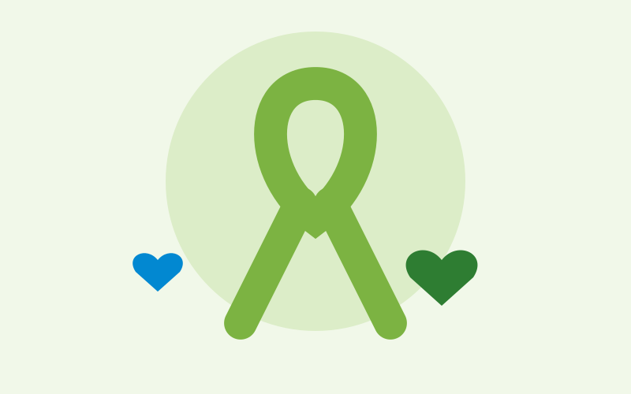

Imagens que educam
Galeria de imagens
Ilustrações sobre reciclagem, sustentabilidade, energias renováveis, ações sociais e inclusão. Cada imagem tem legenda, fonte e descrição em texto alternativo.
Sobre as imagens: todas as ilustrações desta galeria são vetoriais (SVG) e foram criadas pela equipe para o EcoVerde – arquivos leves, que consomem poucos dados. Ao substituí-las por fotografias de bancos de imagens livres, como Unsplash ou Pexels, informe o nome do autor e a fonte na legenda.
Reciclagem


Sustentabilidade


Energia limpa e usinas renováveis



Ações sociais e inclusão


